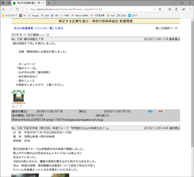
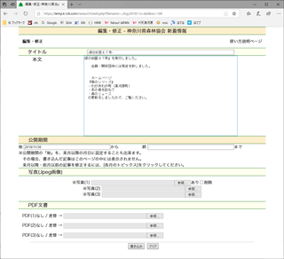
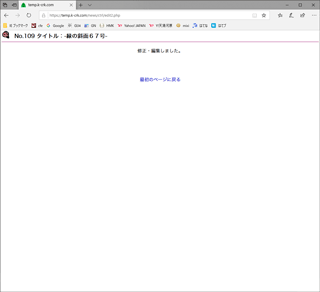

神田珈琲園 お知らせ - 管理画面の使い方 |
||||
| 2019.6 | ||||
３．修正・編集（当月） |
||||
| 1.起動 - 2.書き込み - 3a.修正・編集（当月) - 3b.編集・修正（他の月）- 4.削除 - 番外.写真アップロード | ||||
|  | (1)修正ページに入る |
|||
|  | (2)記事が表示される PDFファイルがある場合にのみ、[PDF文書]の表示と、PDFを撮っていた。削除するための[削除]のチェック欄が現れます。PDFを差し替える場合には、PDF（ファイル）の「参照」ボタンをクリックし、パソコンの中に保存してあるPDFファイルを選択してください。
|
|||
|  | (4)完了 |
|||
(2)各項目について
|
||||
|
||||
 をクリックしてください。
をクリックしてください。 ボタンをクリックしてください。
ボタンをクリックしてください。